Lesson 1 - What is WPILib?
What is WPILib?
WPI Lib is the most commonly used programming library for FRC programming. There are 3 languages you can program in using WPILib: Java, C++, and Python. In these lessons, we will be using the Java language, which most of the FRC teams use.
If you do not know basic Java syntax and concepts, we recommend that you learn those before beginning to learn WPILib. We may add more lessons which focus mainly on learning the basic concepts of Java later on. For now, we recommend that you at least learn up to the level of object-oriented programming with Java.
Part 1 - Installing WPILib
To install WPILib, you will need to get it from the documentation:
Install From DocumentationYou can either install it from here..
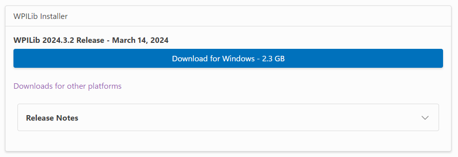Or if you do not have a machine with Windows, scroll down a bit and install it from one of these:
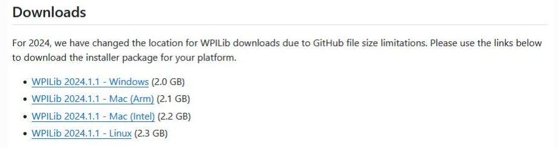The rest of the instructions for completing the installation are outlined on the WPILib Documentation (link above to the installation page). Make sure you install VS Code when prompted!
Be sure to also install normal Visual Studio Code onto your computer, as it's useful to learn the concepts in Lesson 2.
Part 2 - What Exactly Is WPILib?
WPILib is a library which contains specialized Java functions and syntax for FRC Robots.
It is based off what we call "Command Based Programming," which as the name suggests is surrounding commands.
Not only does it have commands for the robot, there are lots of handy built-in functions which can automate your tasks for you.
Part 3 - How Do We Connect Software to Hardware?
FIRST has many tools which allow users to easily connect robot hardware to software quite easily.
Normally during FRC testing and competition, a team will have a "Driver Station" laptop which will control the code for the robot.
The laptop will be connected to a Robot Radio via a wifi connection. The radio looks like this:
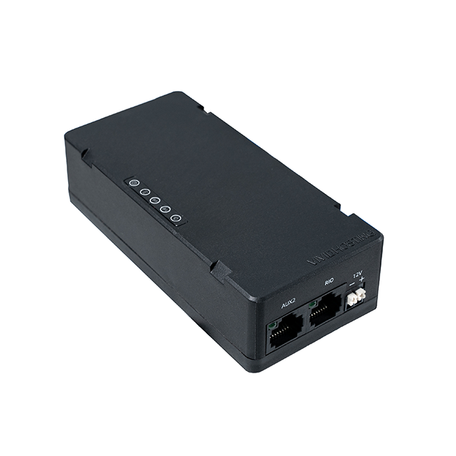In order to send the code to the robot through the radio, teams use an app called DriverStation (Windows only!):
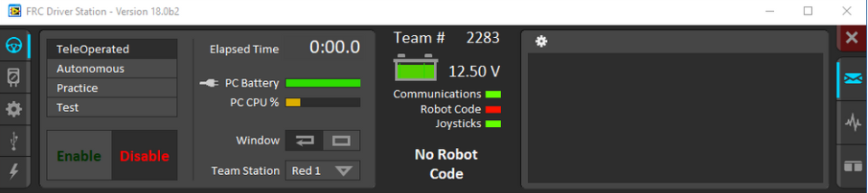Here is a quick overview of what the most important parts of the Driver Station are:
| 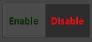 | This is the self-explanatory enable/disable button which allows the robot to be run. This means that the robot can be controlled by the connected controller (which we will get into later) and is "dangerous" to stand around. Make sure to notify those around you that you are enabling the robot before you press the button, to make sure that no one gets hurt around the moving robot. If you need to disable the robot quickly, you can press the ENTER key on your keyboard. Pressing SPACE will E-stop (emergency stop) the robot in case of a serious emergency where all movement needs to be stopped. This functions the exact same as disabling but SPACE may be easier to press. In order to re-enable the robot after it is E-stopped, you must reboot the RoboRIO (which is essentially the brain of the robot) by turning the robot off and on again. |
| 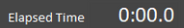 | This timer represents the time since the last time the robot was enabled. |
| 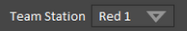 |
This dropdown can change what alliance and what station the robot registers as. In an FRC game, there are 2 alliances, red and blue, and in each alliance, there are 3 robots. Each robot is assigned a station number for their team, as in red 1, red 2, etc. Because FRC fields are not directly mirrored from the red/blue side, you can change the registered robot team outside of competition for testing code. |
| 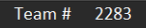 |
This is also the self-explanatory team number which can be configured by going into the settings icon on the left. |
| 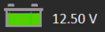 |
This shows the battery percentage of the robot that is connected to the laptop (in volts). It is recommended that the battery of the robot be above 12 volts for the robot to function like it would at a competition. |
| 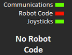 |
This shows the status of the components which the robot requires to run. Communications is whether the laptop is connected to the robot network through the radio (see above). Robot Code shows whether the code is deployed onto the robot through the WPILib commands (which we will cover in the next lesson). Joysticks show whether the controller used for the robot is connected to the Driver Station laptop - normally done through a USB wire. Underneath these status icons is a general status message, such as "Autonomous Enabled" or in this case, "No Robot Code" |
| 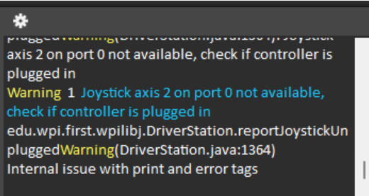 |
This is the console where all errors, warnings, and other miscellaneous information will be displayed during robot function. This includes console output from the robot and other Driver Station warnings and errors, such as in the example. |
If you want a more in-depth view on the best practices for the driver station laptop, view this link:
Best Driver Station PracticesAdditionally, there are other ways to connect software to hardware, as in using a LimeLight which we will cover later into the lessons.
Part 4 - Lesson Summary and Conclusion
You may be asking why we have not started any coding yet. This is because before you begin programming with WPILib, you need to understand how it is used with the robot itself.
In order to be an effective programmer for your team, you must be able to test and work with your code effectively so that during competition, there are minimal bugs or errors.
With this basic knowledge, you'll be able to participate and program much better.